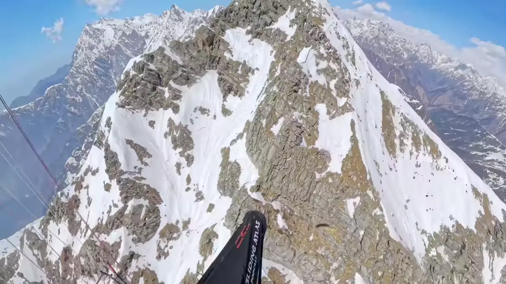
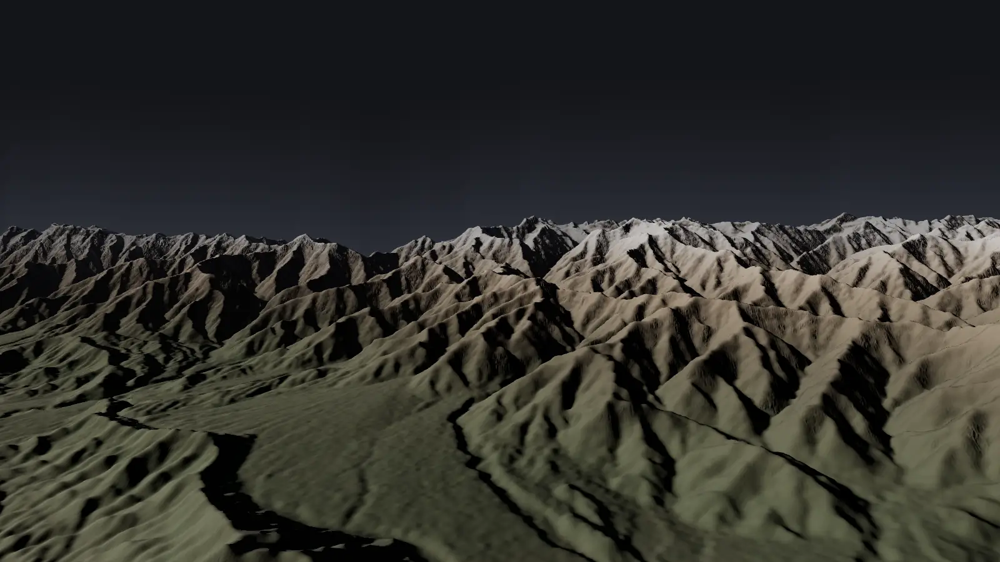
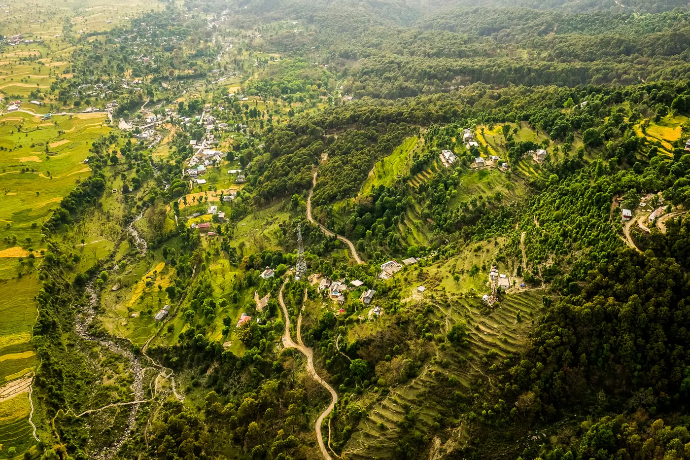
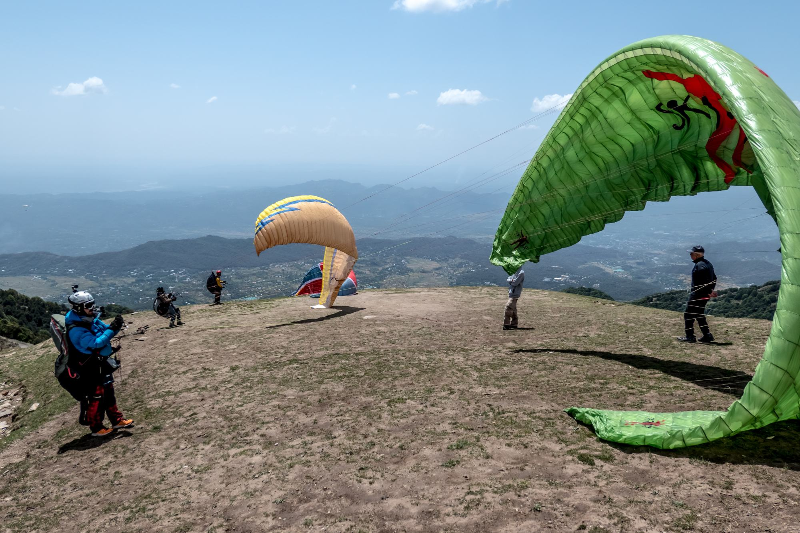
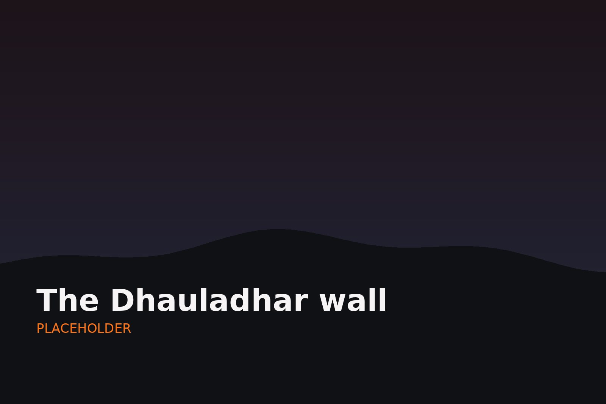

01
Viaje a India 1
Del al de 2027
Salida garantizada6 plazas
Por piloto£1.100
Reserva una plazaVuelo de alta montaña. Diez días en el Dhauladhar, la muralla del Himalaya sobre Bir.
Vuelo de alta montaña desde Bir Billing


despegas desde el prado de Billing,
ganas altura sobre las lomas del Dhauladhar y vuelas hacia el oeste, rumbo a Dharamshala,
y luego giras hacia Bir cuando se va la luz.
de 3 a 3,6 km en la cordillera frontal,
De octubre a noviembre.
Nuestra expedición al Himalaya te ofrece una experiencia aérea que te hace volar sobre paisajes moldeados por el tiempo y la leyenda: planeas sobre monasterios antiguos mientras exploras tus límites en el aire enrarecido. Es un viaje que conmueve el alma. Todo empieza en Bir: un despegue en Billing, un campo de aterrizaje a las afueras del pueblo y una cordillera frontal a lo largo de la cual los pilotos vuelan de ida y vuelta desde los años 1980.
Cada día de vuelo empieza en el prado de Billing, por encima de Bir. En el despegue casi nunca hay viento, así que la única habilidad que debes traer es un despegue de frente limpio, sin ayuda de la brisa,
El plan sigue las condiciones, no un horario. En tierra, Bir tiene un kilómetro de calle con unos cien restaurantes, senderos para caminar, aguas termales y monasterios donde puedes asistir a los cánticos.
Eddie Colfox recuerda que a finales de octubre el aire se volvía demasiado estable para subir mucho más de 2.800 m. Ahora el monzón se alarga hasta la primera semana de octubre, y el aire sigue lo bastante inestable para subir muy por encima de 3.000 m hasta bien entrado noviembre. Al salir de Bir a mediados de noviembre, estuvo a 3.600 m en la cresta frontal y a 5.800 m en lo más profundo de las cordilleras del fondo.
Eddie Colfox, episodio de IndiaLa temporada es el otoño. Eddie Colfox sitúa ahora el inicio del buen vuelo hacia el 10 de octubre, más tarde que antes, y dura hasta bien entrado noviembre. Jigish Gohil, que vive en Bir, dice que en otoño viene casi todo el mundo, porque se vuela con regularidad casi todos los días. En primavera también se vuela, pero es más fuerte y hay mucha menos gente. Para el día de vuelo, la web del propio Jigish, paraguide.in, ofrece una estación meteorológica en directo de Bir Billing.
Jigish Gohil, episodio de BirEl vuelo delante del despegue es la parte de manual: campos de aterrizaje a lo largo de todo el valle, una carretera siempre cerca y buitres leonados marcando las térmicas. Si el día se tuerce, aterrizas, pides la recogida y te vas a casa.
La mayoría de los días terminan de vuelta en Bir. Cuando no es así, los grupos de WhatsApp y Telegram de los pilotos comparten taxis, normalmente cuatro pilotos por coche pequeño, y esa misma red sube a todos a la montaña por la mañana.
Detrás del despegue hay una cresta, y al pasarla todo sube de golpe: altitud, fuerza de las térmicas, turbulencia y frío, alrededor de un tercio según los cálculos de Eddie Colfox. Es un paso para más adelante, no para la primera semana.
El otoño en Bir atrajo a unos 800 pilotos visitantes en 2023, frente a unos 200 cuando llegó Jigish Gohil. Cada mañana hacemos un briefing sobre el tráfico y mantenemos al grupo unido por radio.
No vemos a nuestros clientes como clientes, sino como amigos y compañeros de sueños. Pilotos que, como nosotros, han hecho de explorar nuevos horizontes una prioridad. Por eso no dejaremos ninguna térmica sin probar en nuestro empeño por ayudarte a batir tu récord personal o simplemente a vivir el vuelo de tu vida
Sabemos lo que se siente: Touch The Sky With Glory, y nuestro sueño es poder compartirlo contigo

Imágenes de Bir grabadas por el propio Aninder, tres segundos a lo largo del Dhauladhar. Al desplazarte por la página avanzan y retroceden. Nada se reproduce solo.

Entramos desde una vista de 69 km de ancho sobre el valle de Kangra, bajamos hasta Billing, vamos al oeste por la cordillera frontal hasta Dharamshala, volvemos al este hasta 360 y subimos al otro lado. Al desplazarte, la vista lo recorre volando; o toma los mandos y ve a donde quieras.
Un despegue, un campo de aterrizaje y una cordillera frontal que funciona durante decenas de kilómetros en ambos sentidos. El viaje sigue las condiciones y no un horario; estas son las formas que suelen tomar los días.
a unos 2.400 m
El día típico, y la ruta a la que Eddie Colfox mandaría a un piloto con menos experiencia: hacia el oeste por la cordillera frontal hasta Dharamshala y vuelta a casa, con campos grandes para aterrizar y recogidas fáciles durante todo el recorrido. Según cuenta, los pilotos ya la volaban de ida y vuelta en 1988. Escúchalo contarlo.
Al oeste, de 80 a 90 km de ida y vuelta
Una vez hecho Dharamshala, su siguiente paso es volver hacia el este, pasando el despegue, hasta 360 y luego regresar a casa. La misma cordillera frontal, las mismas opciones de aterrizaje, más recorrido.
Al este, el día más grande
Detrás de Billing hay una cresta, y al pasarla, las grandes montañas: Barabangal, la travesía hasta Manali y más allá. La prueba de Jigish Gohil para ir es un par de cientos de horas, un curso SIV, y el equipo y la forma física para pasar una noche fuera y hacer una larga caminata. Su prueba completa.
Al norte, no es una ruta para la primera semana







El terreno son datos abiertos de elevación de 19 m (AWS Terrain Tiles, Mapzen Terrarium, a partir de SRTM y otras fuentes abiertas) dibujados en directo como relieve, que se recorren al desplazarte por la página o se mueven a mano; los pines son las balizas de Bir con las que vuelan los pilotos (Indian XC League) y los pueblos están situados según GeoNames (CC BY 4,0). Una fotografía marcada con «cerca» está situada según su pie de foto, no según una posición registrada. Los vuelos dibujados son tracklogs reales puntuados según las reglas de XContest: la distancia es la ruta puntuada, la línea discontinua es esa ruta y la velocidad media es la distancia puntuada dividida por el tiempo en el aire. Las fotografías de lugares emblemáticos son de Wikimedia Commons, cada una con su autor y su licencia donde aparece.


A lo largo de la cordillera frontal
Dhauladhar, IndiaCuatro salidas de diez días y nueve noches en Bir, con seis pilotos en cada una.
Del al de 2027
Salida garantizada6 plazas
Por piloto£1.100
Reserva una plazaDel al de 2027
Salida garantizada6 plazas
Por piloto£1.100
Reserva una plazaDel al de 2027
Salida garantizada6 plazas
Por piloto£1.100
Reserva una plazaDel al de 2027
Salida garantizada6 plazas
Por piloto£1.100
Reserva una plaza«Reserva una plaza» envía una consulta para esa salida. Las cuatro salidas están garantizadas: no cancelaremos ninguna por falta de participantes. Lo que debes pagar al reservar se explica en nuestras condiciones de reserva.
Quién guía
Aninder hizo su primer vuelo biplaza de niño en las estribaciones del Himalaya y lleva más de diez años volando desde entonces. Fundó Paragliding Atlas en 2023, ha volado en Bir él mismo y presenta el pódcast, incluidos los dos episodios sobre Bir en los que se basa esta página.
Gurpreet vuela desde 1993 y fue el primer indio con licencia de instructor BHPA. Fundó la escuela PG Gurukul en 2002, hoy con base en Bir, que en 2025 se convirtió en la primera escuela de parapente de India acreditada por el Aero Club of India. Fue el primer indio en subir a un podio internacional de clase abierta, ha volado 69 eventos internacionales y ayudó a redactar las normas de seguridad del parapente y los niveles de piloto de India. En 2026, la FAI le concedió el Diploma Paul Tissandier.
Un guía por cada tres pilotos, nunca más.
[to supply]
Eddie Colfox organiza viajes en Bir desde 2007. Habla de cómo ha cambiado la temporada, de las rutas a lo largo de la cordillera frontal y de lo que cambia en cuanto pasas al otro lado.
Las diez que salen siempre. Si la tuya no está aquí, pregúntala en la llamada. Más sobre Bir de boca de nuestros invitados en Volar en el extranjero, en la base de conocimiento.
En otoño. Eddie Colfox, que vuela en Bir desde 2006, sitúa ahora el inicio del buen vuelo hacia el 10 de octubre, porque el monzón suele alargarse hasta la primera semana del mes y el aire sigue lo bastante inestable para subir por encima de 3.000 m hasta bien entrado noviembre. Nuestras salidas de otoño, 21–30 de octubre y 3–12 de noviembre de 2027, caen dentro de esa ventana; las dos salidas de primavera, 15–24 de abril y 25 abr – 4 may 2027, son anteriores. Eddie habla de la temporada.
IPPI 2 o equivalente, igual que en nuestro viaje a Kenia, y tienes que volar con autonomía: despegar, centrar térmicas, decidir y aterrizar por tu cuenta. Sobre todo, practica despegues sin viento antes de venir, porque en Billing la brisa rara vez te ayuda. Eddie Colfox considera que aquí un piloto de 100 a 300 horas sigue siendo principiante, y su consejo es volar con un grupo con experiencia.
«Vuelo de alta montaña» cuesta £1.100 por piloto por los diez días, lo mismo en cualquier salida, con Aninder Singh y Gurpreet Dhindsa como guías, a razón de un guía por cada tres pilotos. El precio incluye el guiado, el transporte diario hasta Billing y vuelta, las recogidas y las tasas de despegue. Los vuelos internacionales, el visado y el seguro corren por tu cuenta. Las cuatro salidas están garantizadas.
Vuela a Delhi y luego toma un vuelo nacional a Dharamshala, que aparece como Kangra o Gaggal, y un taxi de unas dos horas hasta Bir. Jigish Gohil, que vive en Bir, considera el autobús nocturno Volvo desde Delhi la opción más barata y sencilla, con asientos que se reclinan lo suficiente para dormir. Los aeropuertos de Chandigarh y Amritsar también sirven, con un trayecto más largo al final.
La mayoría de las nacionalidades pueden solicitar en línea el visado e-Tourist de India, pero no todas, así que comprueba la tuya en el portal oficial. Solicítalo al menos cuatro días antes de llegar; con nuestra primera salida el 15 de abril, no es algo para dejar para el final. Desde octubre de 2025, todo visitante extranjero debe además rellenar una e-Arrival Card gratuita en línea en las 72 horas previas al vuelo.
Tu propia vela homologada, un arnés con protección dorsal, paracaídas de emergencia, casco, variómetro o GPS, y una radio. Trae una vela con la que vayas relajado y no la más radical: el consejo de Eddie Colfox es un buen equipo con el que te sientas cómodo. Hace calor en el valle y un frío glacial en el techo, así que lleva un plumífero y unos guantes que ya hayas probado en aire tranquilo. La lista completa está más abajo.
Compruébalo antes de hacer la maleta. Algunos comunicadores satelitales no son técnicamente legales en India, y no toda la información en internet está al día. Eddie Colfox sigue considerando algún tipo de transmisor como equipo de seguridad esencial y lo dice abiertamente, pero cumplir las normas te corresponde a ti. Pregúntanos por tu dispositivo al reservar, para enterarte antes de viajar y no en la aduana.
Un seguro de viaje que cubra el parapente en India hasta al menos 4.000 m, con rescate, tratamiento médico y repatriación. Antes de venir, confirma con tu aseguradora que de verdad paga allí, porque las reclamaciones desde India pueden ser lentas y complicadas. En nuestro episodio con Jigish Gohil, un piloto asegurado que tuvo un accidente a unos 15 km del despegue aun así tuvo que esperar hasta el día siguiente al helicóptero.
Mucha. Jigish Gohil contó unos 800 pilotos visitantes en el otoño de 2023, frente a unos 200 cuando él llegó, porque casi ningún otro sitio se vuela con tanta regularidad en esa época del año. La cordillera frontal es lo bastante ancha para repartirse, y su consejo es dejar la térmica del despegue en cuanto tengas altura para la siguiente cresta. La primavera es más tranquila, con unos 100 pilotos, pero más fuerte.
Un depósito asegura tu plaza y el resto se paga 120 días antes de la salida; si reservas más tarde, pagas el precio completo al reservar. Si después cancelas, se aplica una penalización por rescisión: el precio menos lo que nos ahorremos y menos lo que recuperemos revendiendo tu plaza, y te mostraremos el cálculo. Por eso insistimos tanto en el seguro de cancelación de viaje. Todos los detalles en las condiciones de reserva.
Preferimos que leas esto y decidas que no es para ti a que llegues y lo descubras allí.
«Vuelo de alta montaña» está pensado para pilotos autónomos que quieren el Himalaya en su versión más accesible y que no tienen problema en compartir el cielo para conseguirlo.
Bir tiene fama de ser el Himalaya fácil, y en el aire casi siempre se la gana. Lo que pilla desprevenidos a los pilotos es todo lo que rodea al vuelo: un despegue sin viento con una cola detrás, una térmica del despegue llena de velas y una larga aproximación a un campo de aterrizaje concurrido.
Cómo es un día
La previsión, el plan y el tráfico: dónde es probable que estén las térmicas, hacia dónde ir y qué hacer si el día se cierra pronto.
Taxis compartidos hasta Billing, a unos 45 minutos de Bir, como lo hace todo el mundo, normalmente cuatro pilotos por coche.
En el despegue casi nunca hay viento y habrá cola. Extiende la vela a un lado y, en cuanto la tengas arriba, sal.
Deja la térmica del despegue en cuanto tengas altura para llegar a la siguiente loma. La cordillera frontal funciona durante decenas de kilómetros en ambos sentidos, así que no hace falta quedarse entre la multitud.
La mayoría de los días terminan de vuelta en Bir. Elige tu campo pronto, haz una aproximación completa y, en cualquier otro sitio, atento a las terrazas y los tendidos eléctricos.
Para pilotos que van a Bir por su cuenta y no con nuestro viaje. Nada de esto es exclusivo nuestro, y merece la pena leerlo todo antes de volar allí con quien sea.
La meteo en Bir es la parte fácil. De lo que hablan allí los pilotos es del tráfico, y los accidentes que describen son accidentes de tráfico. Casi todo procede de dos de nuestros propios episodios, con Eddie Colfox, que organiza viajes en Bir desde 2007, y con Jigish Gohil, que vive allí desde hace unos diez años. Sus palabras están parafraseadas, no citadas.
Bir no es el sitio para descubrir qué hace por la tarde tu nueva vela de gama alta. El vuelo es más largo que difícil, y quienes lo disfrutan son los pilotos que no van ocupados pilotando su vela.
No el mejor equipo, dice, sino un buen equipo con el que te sientas a gusto: una vela lo bastante tranquila como para hacer una foto mientras vuelas con ella sin pensarlo dos veces.
Di adónde vas y con quién, cada día, antes de despegar. Y por la tarde, avisa de que has vuelto. La mayor parte de lo que sale mal aquí se puede sobrevivir; pasar seis horas desaparecido antes de que nadie se dé cuenta es lo que lo convierte en un rescate.
Cuéntales a tus amigos tu plan para el día, vuela con un compañero si puedes, lleva algún tipo de localizador y avisa por la tarde cuando hayas aterrizado.
Esto es lo que los folletos callan. Las térmicas que hacen fácil Bir son las mismas en las que está todo el mundo, y el otoño es cuando viene todo el mundo.
Cuando vino por primera vez a pasar una temporada de otoño, volaban allí unos 200 pilotos de todo el mundo. En el otoño de 2023 eran unos 800.
Entra por fuera, toma el sentido de giro establecido y deja espacio. Las colisiones en el aire que describe Jigish Gohil se debieron a pilotos que giraban en el sentido contrario, se amontonaban o no miraban hacia dónde iban.
Si el círculo se vuelve demasiado cerrado para tu gusto, vete a la siguiente cresta. Hay una térmica en cada loma de la cordillera frontal.
En Bir hay pilotos excepcionales, y algunos hacen cosas que no deberías copiar. Una línea que le funciona a un local con una vela de dos líneas no es automáticamente una línea para ti.
No des por hecho que el piloto de delante sabe lo que hace. Algunos de los pilotos que vuelan en Bir son magníficos, y otros sencillamente no saben hacerlo mejor.
El otoño en Bir puede traer sobredesarrollo. El 17 de octubre de 2024, un piloto visitante, cerca del final de un vuelo largo, fue absorbido de 3.000 m a más de 7.000 m dentro de una nube de tormenta en unos diez minutos, y sobrevivió; ese día se notificaron nueve incidentes en la zona, tres de ellos con apertura del paracaídas de emergencia. Lo contó Cross Country.
Fíjate en lo rápido que crecen las nubes, no te metas debajo de las grandes y aterriza pronto en vez de tarde.
Ten mucho cuidado con la nube. En un día fuerte, prefiere escapar hacia el sur, lejos de las montañas, antes que quedarse bajo grandes nubes en un sistema de valles donde puedes quedar atrapado.
El aterrizaje de Bir es grande, de hierba y concurrido, y precisamente por eso la gente se lesiona en él. Si aterrizas en cualquier otro sitio, los peligros principales pasan a ser las terrazas y los tendidos eléctricos, que se ven tarde: sigue mirando hasta tener los pies en el suelo.
Por grande que sea el campo, los pilotos calculan mal el último tramo, llegan largos, luego entran en pérdida desde tres o cuatro metros de altura y se rompen algo.
Detrás de la cordillera frontal el terreno se hace enorme y las opciones escasean. La altitud, la fuerza de las térmicas, la turbulencia y el frío aumentan a la vez, y la ayuda puede tardar hasta el día siguiente en llegar.
Su prueba para pasar al otro lado: un par de cientos de horas, un curso SIV, equipo para dormir fuera y la forma física para caminar ocho o nueve horas. Ve con gente que ya lo haya hecho.
Algunos comunicadores satelitales no son técnicamente legales en India, y no toda la información en internet está al día. Pregúntanos antes de comprar uno o meterlo en la maleta. No lo descubras en la aduana.
Siempre intenta volar con algún tipo de transmisor junto a su paracaídas de emergencia, y reconoce abiertamente que algunos no son técnicamente legales en India.
Nueva Delhi
Bir está a una noche de autobús hacia el norte, o a un vuelo corto hasta Dharamshala y unas dos horas por carretera.
Más de 1,4 mil millones
El país más poblado del mundo. Superficie de unos 3,3 millones km².
Rupia india
INR. Bir solo tiene uno o dos cajeros automáticos, y pueden quedarse sin efectivo los fines de semana, así que llega con efectivo en billetes pequeños para taxis, chai y el regreso tras un aterrizaje fuera de campo.
Hindi e inglés
En los alrededores de Bir, que lleva décadas recibiendo a pilotos visitantes, se habla mucho inglés.
Solicítalo antes de viajar
La mayoría de las nacionalidades pueden usar el visado electrónico, que se solicita al menos 4 días antes de llegar. Todo el mundo debe además rellenar una e-Arrival Card gratuita en línea en las 72 horas previas al vuelo.
230 voltios, 50 hercios
Enchufes de tipo C, D y M. Trae un adaptador.
Calor en el valle, frío glacial en el techo y papeleo que no se puede arreglar el mismo día. Seis cosas están marcadas como esenciales. No viajes sin ellas.
El despegue de Billing está a unos 2.400 m, y el techo en temporada supera los 3.000 m, donde hace un frío glacial.
La cordillera frontal es benévola; el tráfico, no. Trae equipo con el que puedas relajarte.
Si aterrizas al otro lado, la ayuda puede tardar hasta el día siguiente. Lleva lo necesario para pasar una noche fuera.
En India, el papeleo va antes que el vuelo. Nada de esto se puede resolver la misma mañana en que lo necesitas.
Calor en el valle, frío de verdad a 4.000 m. Las dos cosas el mismo día, todos los días.
Billing está a unos 2.400 m y el techo supera con creces los 3.000 m. Trae equipo en el que confíes.
Cosas pequeñas, sobre todo para el día en que aterrices donde no tenías previsto.
Himachal es una de las zonas más suaves de India en este sentido, pero la comida seguirá siendo nueva para tu estómago.
Lo que marques se guarda en este dispositivo, así que puedes volver a ello la noche antes de volar. Nada de aquí se envía a ningún sitio.
¿Listo para Touch The Sky With Glory?
Tanto si eres un piloto de 10 horas que le echa el ojo a su primer 50 como si eres un veterano del cielo en busca de tu próximo récord mundial, nos especializamos en convertir la ambición en horas de vuelo. Esta llamada de presentación, relajada y sin expectativas, te ayuda a despejar las incógnitas hablando claro.
Repasaremos:
Traducido del inglés. Leer la página en inglésInformar de un error de traducción
Nuestras páginas de condiciones, privacidad y seguridad están en inglés. La versión en inglés es la vinculante.